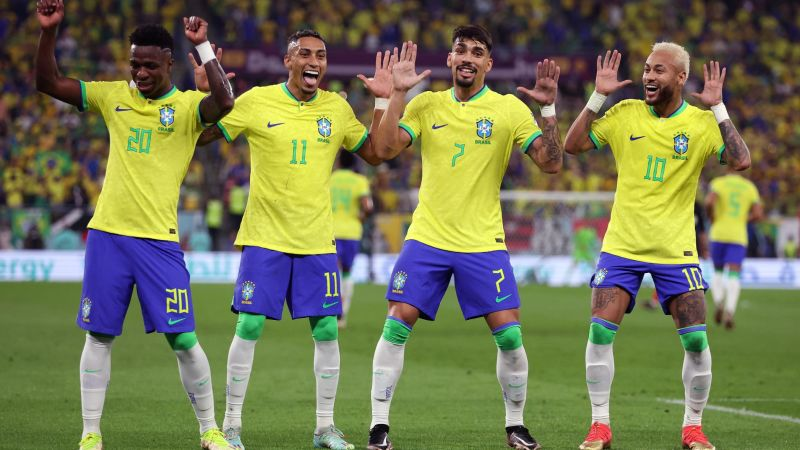

Soccer, also known as football in many parts of the world, is a global sport that is loved and played by millions of people. It is a team sport played between two teams, with each team consisting of eleven players.
The objective of the game is to score more goals than the opposing team. Soccer is a highly skilled game that requires speed, agility, coordination, and strategic thinking. The game is played on a rectangular field with a goal at each end, and the players use their feet to kick the ball and maneuver it across the field. Soccer is not only a sport, but it also serves as a medium for cultural exchange and social interaction. The World Cup, held every four years, is one of the most significant sporting events in the world and brings together people from all over the globe to celebrate the sport of soccer.
My favorite soccer player is Neymar. Neymar, full name Neymar da Silva Santos Júnior, is a Brazilian professional football player widely regarded as one of the best players in the world. He was born on February 5, 1992, in Mogi das Cruzes, Brazil. Neymar started his career with Santos FC in Brazil and quickly established himself as a rising star, winning multiple titles with the team.
In 2013, he moved to FC Barcelona, where he formed a deadly attacking trio with Lionel Messi and Luis Suarez, helping the team win numerous trophies. In 2017, he made a world-record transfer to Paris Saint-Germain, where he has continued to excel. Known for his exceptional dribbling skills, speed, and creativity, Neymar is a fan favorite who has won multiple individual awards, including the FIFA World Cup Best Young Player award in 2014. Off the pitch, he is known for his philanthropy and advocacy work, particularly for underprivileged children in Brazil.